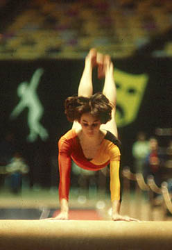

Tracee Talavera (USA)
1981 World B Bronze Medalist

Medal Total
- Olympic Games: 1 Silver
- World Championships: 1
Bronze
Tracee was born on September 1, 1966 in San
Francisco. She was coached throughout most of her career by Dick and Linda
Mulvihill at the National Academy of Artistic Gymnastics. Talavera earned
a spot on the 1979 US world championships team but was not allowed to compete
due to her age (13 years).
Competition Results
- 1976
- California Class II State Championships (9-11): 1st AA, 1st UB, 1st B, 5th V
- Desert Devin Classic: 5th AA, 2nd UB
-
- 1977
- California Class I State Championships (9-11): 1st AA
- California Youth Cup: 3rd AA, 2nd UB, 3rd FX, 5th B
- Can-Am Youth Invitational: 4th AA
- Far Western Invitational (10-11): 1st AA
- Los Altos Twisters Invitational: 1st B, 1st FX, 2nd V, 5th UB
- Sagebrush Open: 4th AA, 1st UB, 5th B
-
- 1978
- Canadian-American Youth Championships: 1st AA, 1st UB, 1st B
Desert Devil Classic: 2nd AA, 2nd UB, 2nd FX
- Emerald Empire Cup: 1st AA, 1st UB, 1st B
- Jr. Olympic Nationals: 1st AA, 1st UB, 1st B
- KIPS Invitational: 6th FX
- Natl. Academy of Artistic Gymnastics v. Japan: 2nd AA,
1st UB, 2nd B, 6th V
- North Shore Invitational: 3rd AA, 2nd B, 2nd FX
-
- Oregon Class I Championships (12-14): 1st AA
- Region II Championships: 1st AA, 1st B, 2nd V, 2nd UB
- Rose Cup: 1st AA
USA-JPN Dual Meet: 2nd AA
- USGF Jr. Nationals: 1st AA, 1st UB, 5th B, 6th FX
- Western Regional Jr. Olympic Nationals: 1st AA, 1st
UB, 1st B
-
- 1979
- American Cup: 3rd AA, 1st UB, 1st B
- Dial Selection Meet: 6th AA
- Far West Invitational: 2nd AA, 1st B, 3rd UB, 3rd FX
- Fiesta Bowl: 1st AA
- HUN International: 7th AA, 4th UB, 4th B
- HUN-USA Dual Meet: 6th AA
- Husky Classic: 3rd AA, 3rd UB, 3rd FX
- Intl. Mixed Pairs: 5th Team
- KIPS Invitational: 6th AA, 1st UB, 3rd V, 6th FX
- National Sports Festival: 1st AA, 1st UB, 1st B
- Oregon Open: 1st VT, 1st UB, 1st B, 5th FX
US Nationals: 3rd AA, 1st UB, 4th FX, 8th V
- US World Trials: 3rd AA
-
- 1980
- Albuquerque Journal Invitational: 2nd AA, 1st V, 2nd UB, 2nd B, 2nd FX
- American Cup: 1st AA, 1st UB, 1st B, 1st FX
- Caesar's Palace Invitational: 2nd AA
- Capital Cup: 3rd AA
- Chunichi Cup: 14th AA
- Emerald Empire Cup: 1st AA
- KIPS Invitational: 1st AA, 1st B, 1st FX, 2nd UB
- National Sports Festival: 1st UB, 1st B
- 2nd Elite Nationals: 1st AA, 1st V, 1st UB, 1st B, 4th
FX
- US Nationals: 2nd AA, 2nd UB, 2nd FX, 6th B
- US Olympic Festival: 1st AA
- US Olympic Trials: 1st AA
- Women's Games: 9th AA
-
- 1981
- American Cup: 2nd AA
- Golden Sands: 8th AA, 3rd B
- Intl. Gymnastics Team Championships: 1st Team, 5th AA
- US Nationals: 1st AA
- US World Trials: 2nd AA
- World Championships: 6th Team, 20th AA, 3rd
B
-
- 1982
- American Cup: 3rd AA
- Caesar's Palace Invitational: 1st AA
- Emerald Empire Cup: 1st AA, 1st V, 1st B, 1st FX, 2nd
UB
- KIPS Invitational: 3rd AA, 1st UB, 1st B
- US Classic: 3rd AA
- US Nationals: 1st AA, 2nd UB, 2nd B, 4th FX, 5th V
- USA-CHN Dual Meet: 2nd AA
- USA-USSR Dual Meet: 2nd Team, 10th AA
-
- 1983
- American Cup: 3rd AA (prelims), 1st B
- Emerald Empire Cup: 2nd AA
- US Nationals: 15th AA, 4th B
- USA-USSR Dual Meet: 2nd Team, 9th AA
-
- 1984
- Albuquerque Journal Intl. Invitational: 3rd AA
- American Classic: 4th AA
- Caesar's Palace Invitational: 4th AA
- Emerald Empire Cup: 1st B, 1st FX, 2nd V, 5th UB
- Olympic Games: 2nd Team, 16th AA
(prelims), 4th V
- US Classic: 1st AA, 1st B, 2nd V, 4th FX
- US Nationals: 8th AA, 1st B, 3rd V, 5th FX
- US Olympic Trials: 6th AA
- USA-CAN Dual Meet: 1st Team, 7th AA
This page was created on July 3, 1999 and was
last updated on June 27, 2026.
© Gymn Forum